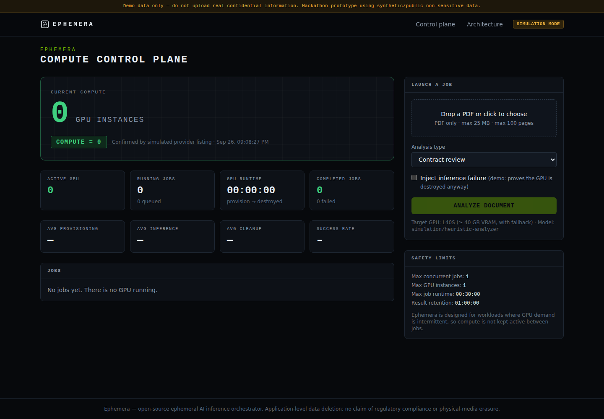
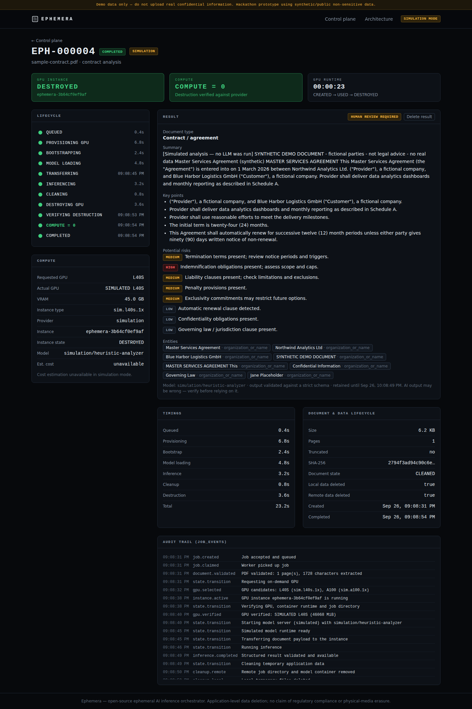

Sensitive documents need AI. Today's options both leak something.
OPTION 1
Third-party AI API
The document leaves your infrastructure
You trust someone else's retention policy
Hard to audit what happened to the data
OPTION 2
Always-on private GPU
Paid 24/7 for work that arrives a few times a day
Data sits on a disk that never goes away
A permanent attack surface
Legal, finance and health teams have intermittent, sensitive AI workloads. Neither option fits.
EPHEMERA02
The solution
Compute-to-Zero: the GPU exists only for the workload.
0
GPU BEFORE THE JOB
1
GPU DURING INFERENCE
0
GPU AFTER — VERIFIED
When a document arrives, Ephemera provisions a GPU on NVIDIA Brev, runs an open-weight model in an isolated environment, returns a structured result, deletes temporary data, destroys the GPU — and checks with the provider that it is gone.
EPHEMERA03
How it works
An auditable lifecycle, not a chat box.
State machine
14 explicit states. Every transition validated, timestamped and stored as an event.
GPU selection
L40S preferred from Brev's live catalogue, with configurable fallbacks. Nothing hard-coded.
Local-only model
vLLM bound to 127.0.0.1 on the instance. Requests run over Brev SSH. No public endpoint.
EPHEMERA04
The product
The hero metric is a zero.


Screenshots: simulation mode on synthetic documents (labelled in the UI). "COMPUTE = 0" requires both our database and the provider's own instance listing to agree.
EPHEMERA05
The core guarantee
If we provision it, we destroy it — on every path.
HOW THE JOB ENDS
WHAT EPHEMERA DOES
TESTED
Success
Clean → destroy → verify absent → COMPLETED
✓
Model / inference failure
Clean → destroy → verify → FAILED, GPU gone
✓
Provisioning half-failed
Destroy anyway — a failed create can still leave a VM
✓
Timeout · user cancel · worker SIGTERM
Workload cancelled, teardown shielded and completed
✓
Worker crash (SIGKILL)
Reconciliation on restart finds and destroys the orphan
✓
Destruction can't be verified
CLEANUP_FAILED, new GPUs blocked until reconciled
✓
EPHEMERA06
Validated on real NVIDIA Brev
Real L40S GPUs, really destroyed.
~3m15s
real brev create of an L40S
~40s
delete + verified absent via brev ls
2 / 2
jobs ended with GPU DESTROYED · COMPUTE = 0
HONEST STATUS Both first real jobs failed before inference — and Ephemera still destroyed the GPU, exactly as designed. Root cause found in the logs (SSH config path inside the container), fixed and regression-tested. The full real inference run is next.
REAL WORKER LOG · 2026-09-27 · JOB e0e92679 (TIMES UTC)
Ports & adapters: swap Brev for another provider or vLLM for NVIDIA NIM without touching the orchestrator. No Kafka, no Redis, no Kubernetes — PostgreSQL is the durable queue.
EPHEMERA08
Security by design — not by claims
The model has zero power.
What we built
Document = untrusted data: random-boundary delimiting, never in the system prompt
Model has no tools; output validated against a strict JSON schema
Fixed Brev argv only — filenames never reach a shell or CLI
Secrets redacted from logs; HF token never on a command line
PDF parsed in a CPU/memory-limited sandbox before any GPU exists
Threat model: 12 threats, each with mitigation + residual risk
What we refuse to claim
"100% secure"
"GDPR / HIPAA compliant"
"Unrecoverable deletion"
"Instant GPU"
We say: ephemeral compute, application-level data deletion, auditable lifecycle.
EPHEMERA09
Built like infrastructure
Proof, not slideware.
149
backend tests — unit + real PostgreSQL
10/10
critical lifecycle scenarios covered
CI ✓
ruff · mypy --strict · ESLint · Playwright E2E
Real-mode pipeline tested end-to-end against a fake brev CLI built from the real v0.6.335 syntax — plus the real GPU bootstrap script run against stubbed nvidia-smi / docker / curl.
Bugs caught before production: vLLM flag removed in v0.30, 10 MB proxy upload limit, brev exec re-running failed commands, SSH config path — each fixed with a regression test.
EPHEMERA10
Who it's for · what's next
Intermittent, sensitive AI workloads.
Users
Legal teams reviewing contracts
Finance & compliance analysing reports
Health & public-sector document triage
Any team that can't justify a 24/7 GPU
Roadmap
Full real-inference validation + published timings
NVIDIA NIM provider behind the same port
Auth & multi-tenancy (ownership checks already in place)
Long documents: chunking, OCR
Opt-in warm pool with explicit TTL
Cost story, stated honestly: we show the real GPU runtime per job — CREATED → USED → DESTROYED — never an invented savings percentage.
EPHEMERA11
Ephemera doesn't keep an AI GPU waiting for work. When the work arrives, it provisions compute. It infers. It cleans up. It destroys.
COMPUTE = 0
EPHEMERA
github.com/distera-tech/ephemera · Apache-2.0
HACKATHON PROTOTYPE · SYNTHETIC DATA · APPLICATION-LEVEL DATA DELETION